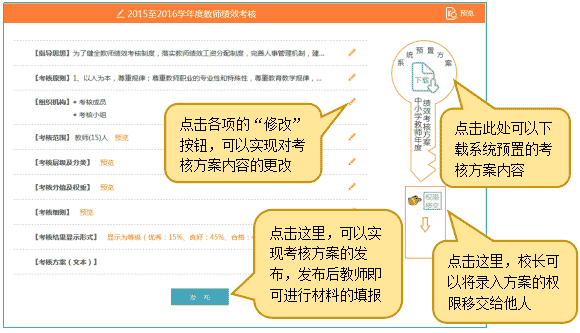
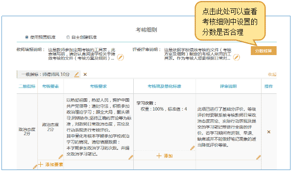
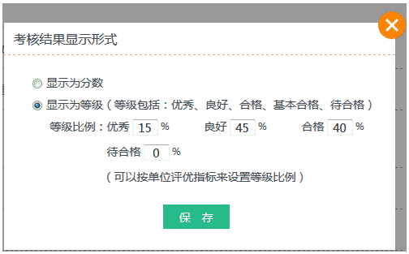
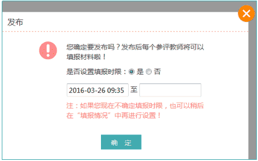

3.3.3 考核方案
点击“考核方案”的“录入方案”（图3.3.2-1）后，即可进入相应的页面（如图3.3.3-1）。用户可以在此页面对考核方案进行各信息项查看、录入和修改，具体内容包括：指导思想、考核原则、组织机构、考核范围、考核层级及分类、考核分值及权重、考核细则、考核结果显示形式、考核方案（文本）。
•指导思想、考核原则：用于录入此次绩效考核的指导思想和考核原则。
•组织机构：设置考核委员会成员和考核小组成员。
•考核范围：设置被考核人。
•考核层级及分类：确定考核层级（系统可进行组长级、主任级、考核小组三级考核，学校可根据实际情况进行设置）及考核分类（可采用学期考核和学年考核，学期考核：每学年分上学期和下学期进行考核两次，学年考核：每学年考核一次）。
•考核分值及权重：设置考核总分及基础分、等级分、各考核层级的权重。
•考核细则：制定具体的考核内容（如图3.3.3-2）。用户可以使用系统预置的标准，也可以自主创建标准。
•考核结果显示形式：设置考核结果的显示形式。若设置的是分数，则教师查看到的考核结果是分数；若设置的是等级，则教师查看到的考核结果是等级。
•系统预置方案：平台提供系统预置方案，供用户进行查看和下载，学校在线下讨论修改形成正式考核方案后，再进行录入设置！
•权限移交：校长可以将录入考核方案的权限移交给学校任一一位主任（移交后该位主任将有“录入方案”的权限，可以对考核方案的内容进行修改，包括发布功能），自己监管即可。若想收回权限，直接将权限移交处清空即可。
•发布：考核方案设置完成后，点击“发布”按钮，即可成功发布（发布时，用户可以设置教师的“填报时限”，如图3.3.3-4）。发布后，教师即可进行材料的填报，与此同时，学校领导可以在“填报情况”中实时查看教师的填报情况。
